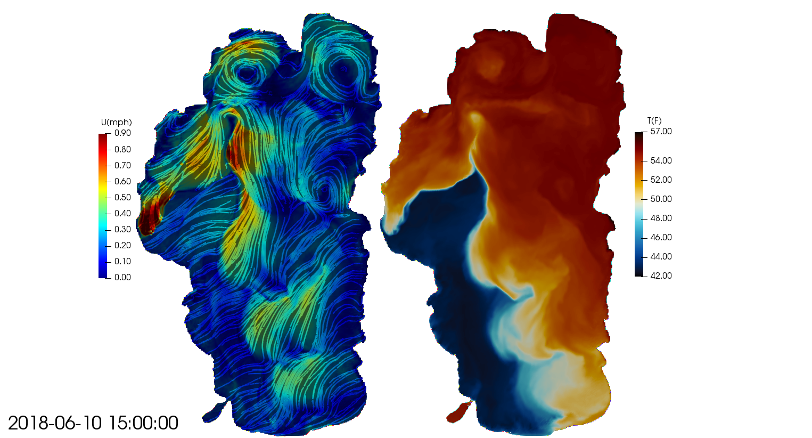
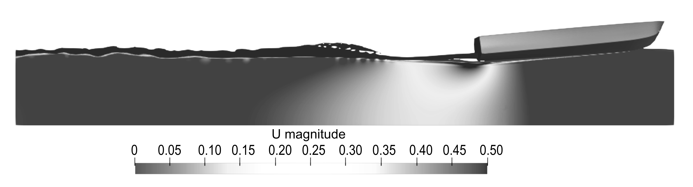

Dynamics of Upwellings in a Medium-size to Large Lake

Boat Induced Sediment Resuspension in the Nearshore Area of a Lake
Water clarity in rivers, lakes, and estuaries is of major concern in different parts of the world; it is of continuous research interest due to its high complexity and adverse implications. Boats in shallow flows can stir up sediments into the water column, causing water clarity losses. High boating activity was attributed as a factor for water clarity to decline in Lake Tahoe. Our study investigates sediment resuspension due to boat activity in shallow flows.

Our computations show that 3D numerical simulations can predict adequately the boat induced shear stresses close to beds, which can be applied to river flows. In addition, the numerical simulations also showed the capability of predicting accurately the boat wake at different vessel speeds, which turns out to be of interest for water-quality and ecosystem challenges in rivers and estuaries. For the study site of Lake Tahoe, it was found that boats traveling at speeds greater than 10 km/h cause sediment resuspension in shallow waters of up to 2.5 m deep.
The full content of this work was published in the conference proceedings RiverFlow 2020, and the citation to access the full text can be found in the publications tab of this website.